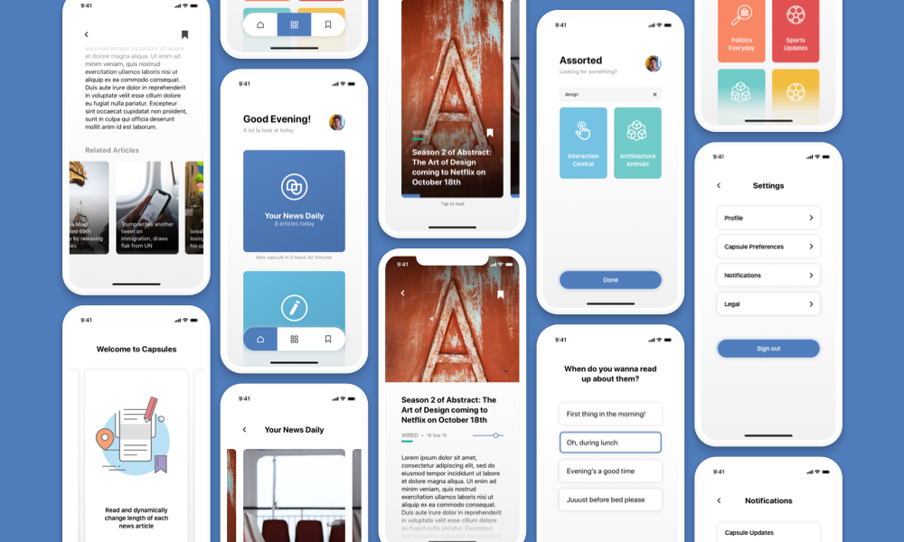

and Interaction Design
Fall 2019
The Problem
I noticed a considerable dip in the amount of news consumed by my college mates and other students in this age group. Knowing the importance of keeping abreast of what's happening around the world to atleast a certain extent, I set out to fix this problem.
The Solution
Capsules is a modern-day news aggregator that personalises news updates, by delivering a curated number of relevant and appropriate articles depending on the reader's convenience, giving the reader granuate control over her news consumption.
Goals
01
To assure the reader of the validity of the news headline.
02
To provide news articles that are crisp and concise.
03
To show relevant and important news updates only.
04
To optimise the number of news updates the user has to read.
Key Interactions
In tandem with the goals set for myself, I came up with several interactions detailed below. These interactions highlight the main features of Capsules.
Onboarding
The reader chooses what news she wants to read, how much she wants to read everyday and when she wants the updates.

News Updates
The reader gets a curated and handpicked set of news updates, delivered once everyday. This leads to sense of accomplishment once completed. She can also read news updates about other topics she finds interesting.
Curated Topics
Each capsule has a fixed number of article, each rewritten such that the length can be customised. Further, each vendor is rated on how accurate their news articles are.

Process
To begin my design process, I did a lot of research on news reading habits among teenagers and working professionals through semi-structured interviews and online surverys.
General news outlets are opinionated and provide irrelevant news update
News articles in newspapers and websites are too long to read
People question why they should be aware of the news
People don’t dedicate time to catching up with news updates
People enjoy sharing opinions with peers and colleagues
People are concerned with developments in their fields of interest
Opportunity Areas
From the top findings and insights I gathered from the research, I narrowed down on two major opportunity areas I wanted to focus on.
“How might we optimise critical news update delivery?”
“How might we motivate users to catch up on the latest news?”
Infomapping
I visualised the flow of the product, with one main user flow and other secondary actions.
Conceptualisation
Style Guide
Final Design

Learning
This project was quite the learning experience. The biggest project I undertook all by myself, it gave me an insight into all the steps of the design process and taught me how to manage my workflow appropriately.
Scope
Capsules needs to be tested with the target audience to evaluate its usability and functionality. The first step to launch Capsules is to approach news vendors to get access to their news articles.